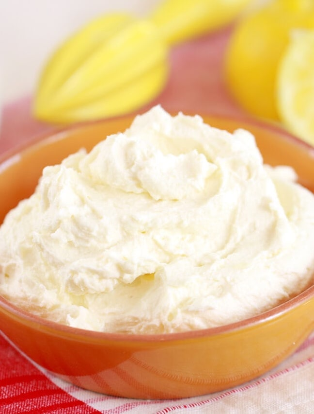
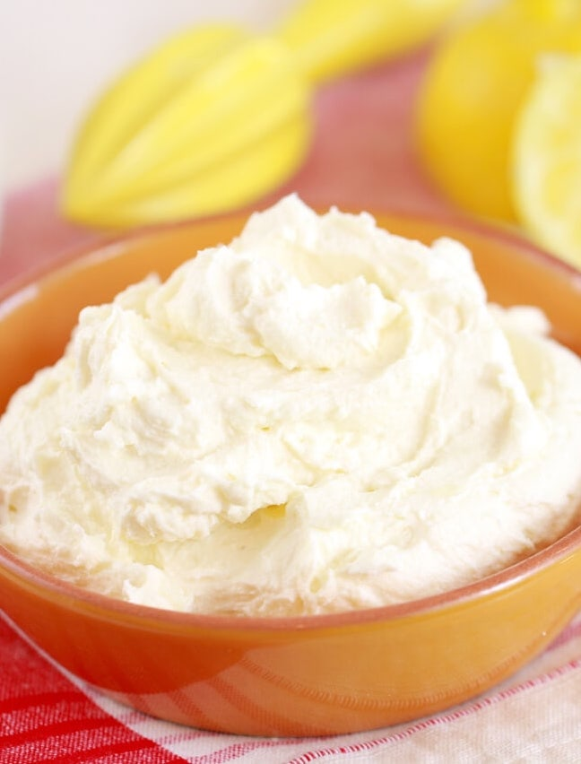

BUFFALO
CHICKEN ENCHILADAS
Ingredients
- 3 tablespoons unsalted butter, melted, plus more for greasing the pan
- 4 cups shredded rotisserie chicken
- 8 ounces cream cheese, at room temperature
- 2 cups shredded Cheddar
- 1 cup Buffalo-style hot sauce, plus more for serving
- 1 bunch scallions, thinly sliced, white and green parts separated
- 1/4 teaspoon ground cumin
- 16 corn tortillas
- 2 tablespoons crumbled blue cheese
- 2 tablespoons blue cheese dressing
Directions
Step 1
Preheat the oven to 400 degrees F. Butter a 9-by-13-inch baking dish.
 

Step 2
Mix the chicken, cream cheese, 1 cup of the Cheddar, 1/3 cup of the hot sauce, white parts of the scallions and cumin in a large bowl until well combined. Stir together the butter, remaining 2/3 cup hot sauce and 3 tablespoons water in a medium bowl.
Step 3
Microwave the tortillas in batches until warm, softened and foldable, about 30 seconds. Keep warm between damp paper towels.
Step 4
Spoon a portion of the chicken mixture down the middle of each tortilla and roll up. Place them side by side, seam-side down, in the prepared pan. Pour the hot sauce mixture over the tortillas. Sprinkle with the remaining 1 cup Cheddar and the blue cheese and bake until the cheese is melted and bubbly, 15 to 17 minutes.
Step 5
Drizzle the blue cheese dressing over the enchiladas and sprinkle with the scallion greens. Serve with more hot sauce.